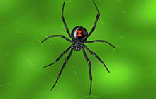

This free script provided by JavaScript Kit
Latest ScienceNews
One step closer to controlling the sun
Physicists have discovered how to harness nuclear fusion.
Read More

Body armor from spider silk?
A spider's silk is light and flexible, but it is also 10 times stronger than Kevlar.
Read More
Time Cloak makes events disappear
Invisibility is no longer a thing of Science Fiction.
Read More
TOGETHER We'll Advance!
"Logic will get you from A to B. Imagination will take you everywhere" -Albert Einstein
Welcome to A ADVANCE. A ADVANCE is a site dedicated to helping high schoolers survive through physics by helping them understand concepts in completely different ways. This website is inteneded to be used on both computers and mobile devices since many high students often spend most of their time on iPods and smartphones. Not only do we hope to teach you vital physics concepts, but also simple experiments that you can do to demonstrate those concepts and real life examples of how concepts are used.
To learn more about our mission, click on the link below.
Interested in learning about the development process for this site? View our Webmaster's Development Document for ideas on how to develop your own physics site if you really get interested with ours.